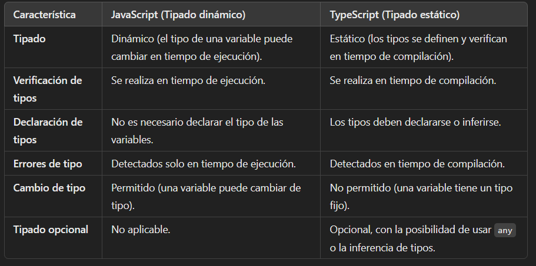

<h1>FUNDAMENTOS DE TYPESCRIPT</h1>

<table>
    <tr>
        <td>Variables Primitivas</td>
        <td><button type="button" (click)="variables()">Variables Primitivas</button></td>
    </tr>
    <tr>
        <td>Explicación tipado estático</td>
        <td><button type="button" (click)="tipadoEstatico()">Tipado estatico</button></td>
    </tr>
    <tr>
        <td>Tipos avanzados</td>
        <td><button type="button" (click)="tiposAvanzados()" >Tipos Avanzados</button></td>
    </tr>
    <tr>
        <td>Funciones de Array</td>
        <td><button type="button" (click)="usoArrays()" >Funciones Array</button></td>
    </tr>
    <tr>
        <td>Estructuras de control</td>
        <td><button type="button" (click)="estructurasControl()" >Estructuras de Control</button></td>
    </tr>
    <tr>
        <td>Uso de interfaces</td>
        <td><button type="button" (click)="usoInterfaces()" >Uso de interfaces</button></td>
    </tr>
</table>

